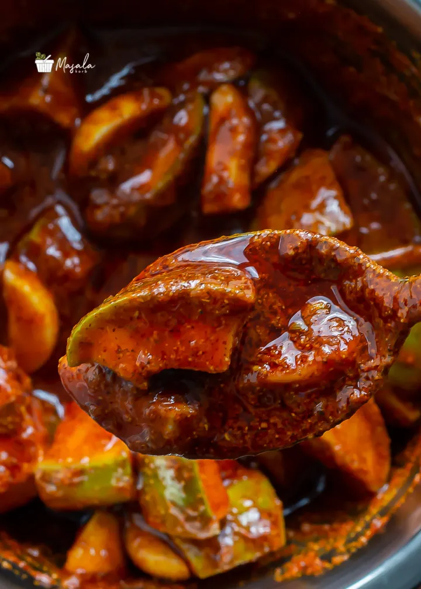

Avakaya(Mango Pickle)
Home

Mango Pickle
Mango pickle is very famous in Andhra Pradesh state of India
Ingredients
- 3 raw mangoes
- one spoon of salt
- one cup of red chilies powder
- one cup of oil
- mustard seed 2 table spoons
- turmeric
- Fenugreek seeds
Steps
- Wash the raw mangoes thoroughly. Wipe them dry completely (no moisture). Cut into 1-inch pieces with the inner seed skin intact.
- Dry roast mustard and fenugreek seeds separately. Cool and grind mustard seeds to a fine powder. Use fenugreek seeds as whole or slightly crushed.
- In a clean, dry bowl, combine ground mustard, chili powder, salt, turmeric, and fenugreek seeds.
- Add mango pieces and mix until all pieces are well-coated. Pour warm (not hot) gingelly oil over the mixture and mix well.
- Transfer to a clean, dry glass or ceramic jar. Cover and let it rest for 3–5 days at room temperature. Stir once a day with a clean dry spoon. Oil should float above pickle—add more if needed.